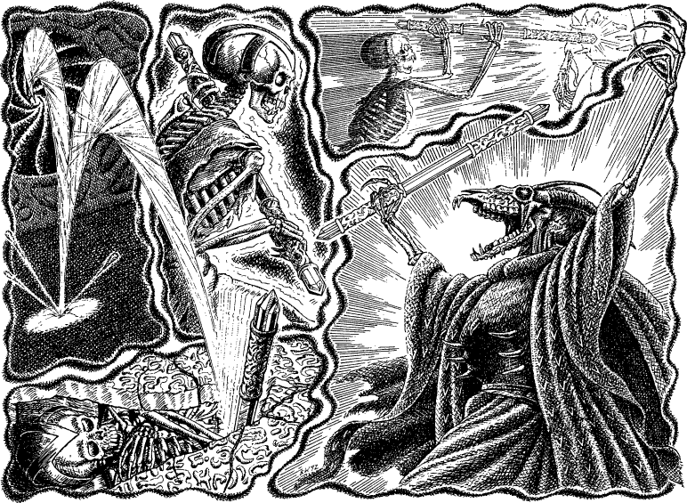

300
A sense of unease makes you slow your hurried pace as you approach the shadowy opening. The low humming noise, which has been a constant presence ever since you first entered the Crystal Spire, is almost unbearable now. Were it not for your natural Kai defences, your hearing would have suffered permanent damage the moment you passed beyond the two pillars.
Beyond the opening lies a grand yet sinister chamber. Peering into its gloomy recesses, you observe that this chamber was constructed with great skill and care in some distant age. But it is not the rich decorations which hold your attention; it is the whirling circular vortex which hangs on the far wall like some nightmarish, living mural. Your pulse quickens when you look into its spinning core for you recognize immediately that it is a Shadow Gate—an astral doorway to another plane of existence.

Your Kai senses quickly become attuned to the powerful psychic residues which linger in this chamber. You notice that several empty coffins lie scattered about the floor and, when you focus upon them, chilling dream-like images form in your mind’s eye. You see the accursed Deathstaff emerging from the Shadow Gate. It spins end-over-end and impacts against the heavy stone lid of a coffin, breaking it in two. Its evil power feeds un-life into the mouldering remains of the Ixian Elder lying within and, driven by this ungodly energy, the remains rise up from their stony tomb. The resurrected Ixian bears the Deathstaff to the highest chamber of the Crystal Spire where, imprisoned in a cage of light fashioned by the Elder Magi, stands Deathlord Ixiataaga. The Ixian pushes the Deathstaff through the wall of this shimmering prison and, with a crackling flash, the cage of light vanishes. Freed from the magical prison which has kept him secure for thousands of years, Deathlord Ixiataaga takes the Deathstaff and howls with manic glee as he rejoices in his fateful escape.
The disturbing images fade from your mind, driven away by your Kai Sixth Sense which is warning you of imminent danger. A wispy black vapour is leaking from the circular stone edging which abuts the whirling Shadow Gate. You focus upon these smoky black trails and sense at once that they are alive and that they radiate an aura of evil.
If you possess Kai-screen and have attained the Kai rank of Sun Thane, turn to 223.
If you possess Kai-screen but have yet to attain the Kai rank of Sun Thane, turn to 131.
If you do not possess the Discipline of Kai-screen, turn instead to 24.